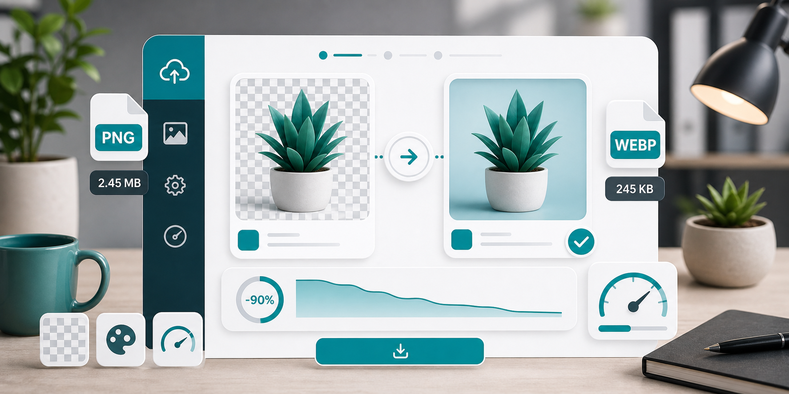

WebP conversion
Convert PNG to WebP online for smaller website images.

PNG is reliable, but it is not always lightweight. Large screenshots, exported graphics, and product images can become heavy when saved as PNG. If the image is going on a modern website, converting PNG to WebP can often reduce file size while keeping the image clear.
WebP is useful because it can support both lossy and lossless compression, and it can handle transparency. That makes it a practical alternative for many PNG files. It is especially worth testing for large graphics, website banners, product cutouts, and screenshots that do not need to stay in a legacy format.
Before converting, ask why the image is PNG. If it is a logo or icon and you have an SVG version, SVG may be better for the web. If it is a transparent product image, WebP may work well, but check that your platform supports it. If it is a simple flat-color screenshot, PNG may already be reasonably efficient. The best answer depends on the image.
After converting to WebP, compare the result at normal viewing size. Look at edges, transparency, small text, and color gradients. WebP can be very efficient, but the quality setting still matters. If a graphic contains tiny text or crisp UI details, use a higher quality setting.
For websites, WebP works best as part of a broader image workflow: resize the image to the correct display size, convert or compress it, use descriptive filenames, and add helpful alt text when the image is meaningful. Compression improves speed, but SEO also depends on context and accessibility.
Use the PNG compressor to upload a PNG and choose WebP output. If you are unsure whether the format is right, read JPG vs PNG vs WebP. For page-speed planning, read image compression for SEO and website speed.
For transparent images, test the edges after conversion. Look around product cutouts, logos, and icons. If the edge looks jagged, dirty, or surrounded by a halo, adjust quality or keep PNG. A smaller WebP file is not worth a visibly poor transparent edge on a professional page.
For screenshots, compare text carefully. WebP can work well, but small UI labels need enough quality. If the screenshot is part of documentation or a tutorial, readability matters more than a tiny file size. A user should be able to understand the image without zooming in repeatedly.
If your website supports the picture element or automatic image optimization, you may be able to serve WebP while keeping PNG as a fallback. For a simple GitHub Pages site, you can also manually keep both files and reference the WebP version where supported, as this project does for the hero image.
Do not convert every PNG automatically. Test a sample from each image type: logo, screenshot, product image, chart, and banner. If WebP consistently wins for that group, use it. If PNG looks better or is already small, keep PNG.
When updating an existing website, change images in batches and check important pages after each batch. This makes it easier to catch a broken transparent image, incorrect file path, or unexpected quality issue. For a small static site, a careful manual conversion can be safer than a blind mass replacement.
Do not delete your original PNG immediately. Keep it as the master copy, especially if it has transparency or design value. Use the WebP version as your web-ready delivery file.
Sources and further reading
- web.dev image performance notes that WebP and AVIF may provide better compression than PNG or JPEG.
- Google Search Central on AVIF support also advises evaluating which format works best for your needs.